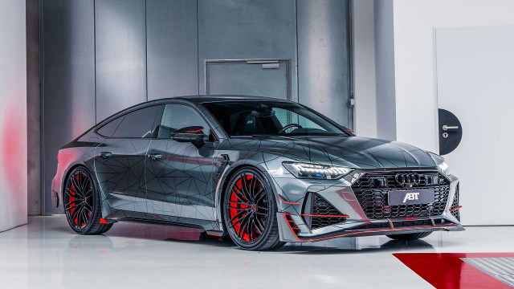

Audi RS7 е спортен луксозен седан, който съчетава елегантност и висока производителност.
Автомобилът предлага спортен характер, съчетан с първокласен интериор и технологии.
| Показател | Стойност |
|---|---|
| Тип автомобил | RS спортен седан |
| Двигател | 4.0 V8 TFSI |
| Мощност | 600 к.с. |
| Задвижване | quattro |
| 0–100 км/ч | 3.6 сек. |
| Максимална скорост | 305 км/ч |